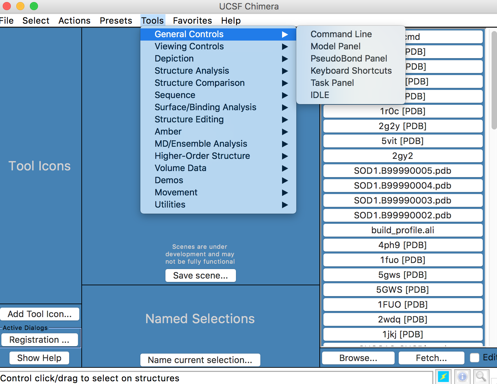
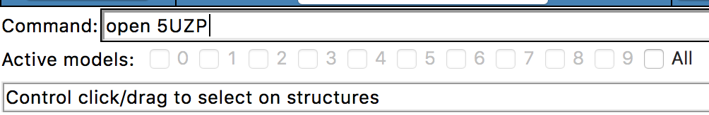

Step Five: Open Structures in Chimera
Provided below are links to Chimera commands and the UCSF tutorials
UCSF Chimera Complete Tutorial
Chimera Quick Refernce Sheet
a) open Chimera, select tools -> command line

b) type open followed by the PDB ID
